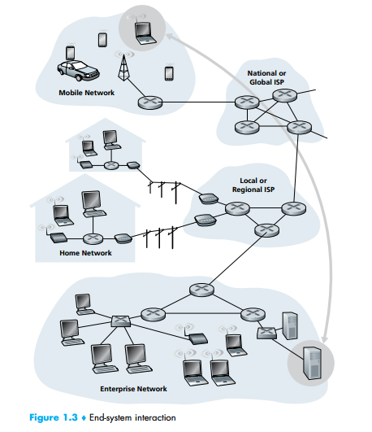

The Network Edge
In the previous section we presented a high-level overview of the Internet and networking protocols. We are now going to delve a bit more deeply into the components of a computer network (and the Internet, in particular). We begin in this section at the edge of a network and look at the components with which we are most familiar—namely, the computers, smartphones and other devices that we use on a daily basis. In the next section we’ll move from the network edge to the network core and examine switching and routing in computer networks.
A DIZZYING ARRAY OF INTERNET END SYSTEMS
Not too long ago, the end-system devices connected to the Internet were primarily
traditional computers such as desktop machines and powerful servers. Beginning in
the late 1990s and continuing today, a wide range of interesting devices are being
connected to the Internet, leveraging their ability to send and receive digital data.
Given the Internet’s ubiquity, its well-defined (standardized) protocols, and the
availability of Internet-ready commodity hardware, it’s natural to use Internet technology to network these devices together and to Internet-connected servers.
Many of these devices are based in the home—video game consoles (e.g.,
Microsoft’s Xbox), Internet-ready televisions, digital picture frames that download
and display digital pictures, washing machines, refrigerators, and even a toaster
that downloads meteorological information and burns an image of the day’s forecast (e.g., mixed clouds and sun) on your morning toast [BBC 2001]. IP-enabled
phones with GPS capabilities put location-dependent services (maps, information
about nearby services or people) at your fingertips. Networked sensors embedded
into the physical environment allow monitoring of buildings, bridges, seismic activity, wildlife habitats, river estuaries, and the weather. Biomedical devices can be
embedded and networked in a body-area network. With so many diverse devices
being networked together, the Internet is indeed becoming an “Internet of things”
[ITU 2005b]
Recall from the previous section that in computer networking jargon, the computers and other devices connected to the Internet are often referred to as end systems. They are referred to as end systems because they sit at the edge of the Internet,
as shown in Figure 1.3. The Internet’s end systems include desktop computers (e.g.,
desktop PCs, Macs, and Linux boxes), servers (e.g., Web and e-mail servers), and
mobile computers (e.g., laptops, smartphones, and tablets). Furthermore, an increasing number of non-traditional devices are being attached to the Internet as end systems (see sidebar).

End systems are also referred to as hosts because they host (that is, run) application programs such as a Web browser program, a Web server program, an e-mail
client program, or an e-mail server program. Throughout this book we will use the
terms hosts and end systems interchangeably; that is, host = end system. Hosts are
sometimes further divided into two categories: clients and servers. Informally,
clients tend to be desktop and mobile PCs, smartphones, and so on, whereas servers
tend to be more powerful machines that store and distribute Web pages, stream
video, relay e-mail, and so on. Today, most of the servers from which we receive
10 CHAPTER 1 • COMPUTER NETWORKS AND THE INTERNET
A DIZZYING ARRAY OF INTERNET END SYSTEMS
Not too long ago, the end-system devices connected to the Internet were primarily
traditional computers such as desktop machines and powerful servers. Beginning in
the late 1990s and continuing today, a wide range of interesting devices are being
connected to the Internet, leveraging their ability to send and receive digital data.
Given the Internet’s ubiquity, its well-defined (standardized) protocols, and the
availability of Internet-ready commodity hardware, it’s natural to use Internet technology to network these devices together and to Internet-connected servers.
Many of these devices are based in the home—video game consoles (e.g.,
Microsoft’s Xbox), Internet-ready televisions, digital picture frames that download
and display digital pictures, washing machines, refrigerators, and even a toaster
that downloads meteorological information and burns an image of the day’s forecast (e.g., mixed clouds and sun) on your morning toast [BBC 2001]. IP-enabled
phones with GPS capabilities put location-dependent services (maps, information
about nearby services or people) at your fingertips. Networked sensors embedded
into the physical environment allow monitoring of buildings, bridges, seismic activity, wildlife habitats, river estuaries, and the weather. Biomedical devices can be
embedded and networked in a body-area network. With so many diverse devices
being networked together, the Internet is indeed becoming an “Internet of things”
[ITU 2005b].
CASE HISTORY
search results, e-mail, Web pages, and videos reside in large data centers. For
example, Google has 30–50 data centers, with many having more than one hundred
thousand servers.